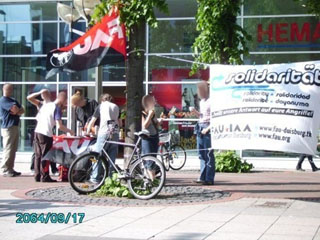
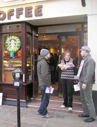

Submitted on Thu, 05/24/2007 - 12:52am
The Duisburg local federation of the FAU-IWA had a stall in front of the new Duisburg Starbucks on Friday, 18th. Workers at Starbucks have been informed about the repression against their fellow-workers in the USA and about the SWU.
Many clients and people passing by were very upset about Starbucks anti-workers policy and told that they would not enter the shop again. People were as well upset about the presence of Starbucks in a brand-new luxury shopping mall in Duisburg, a poor industrial town with up to 20 percent of people without a job. Those who can read German will find more detailed information at the FAU website (http://www.fau.org/artikel/art_070519-064536) as well as some photos taken during the picket at Indymedia Germany (http://de.indymedia.org/2007/05/177523.shtml).
Submitted on Sat, 05/19/2007 - 11:18pm
Contact:
Grand Rapids: Cole Dorsey, Barista and Union Member - 616-881-5263
Chicago: Joe Tessone, Barista and Union Member - 815-545-5273
New York: Daniel Gross, Organizer IWW Starbucks Workers Union - 917-577-1110
Grand Rapids, MI 5/17/07- Baristas at Wealthy St. Starbucks in East Grand Rapids announced last night their membership in the IWW Starbucks Workers Union ( http://www.starbucksunion.org ), becoming the first store in Michigan to declare union membership at the world's largest coffee chain.
Workers served Starbucks management at the café, located on 2172 Wealthy St. SE, with a declaration of union membership and a set of demands including a living wage, guaranteed work hours, reinstatement of IWW baristas fired for organizing activity, and respect for an independent voice on the job through union membership.
“For a company as profitable as Starbucks my fellow baristas and I should be better compensated for our work,” said Cole Dorsey, an IWW barista at the Wealthy St. store. “We hope to build off the achievements already won by the IWW Starbucks Workers Union in New York and Chicago and improve our working conditions here in Grand Rapids.”
After management got wind of the 'union talk' at Starbucks cafes in Grand Rapids all baristas citywide were forced to sign Starbucks corporate statement on unions.
One victory already won at the Wealthy St. store is more consistent scheduling, which came about directly after workers began discussing the union.
In stark contrast to its employee-friendly image, Starbucks workers in Grand Rapids and around the world face low wages and barriers to health care and other benefits. After years of promoting itself as a leader in employee health care, Starbucks was forced to admit that only 42% of its employees (including management) are covered by company health care- that figure is lower than Wal-Mart's 47%, a company often condemned for its poor health care package.
In Grand Rapids, baristas start at only $7.25 per hour and, like all café workers at the company,are not guaranteed any number of work hours per week. Employees who expect to work full-time are often not given the necessary number of hours to qualify for health care benefits.
Founded in 2004, the IWW Starbucks Workers Union has won three wage increases, more consistent scheduling, and safety improvements at Starbucks stores across the country. The union uses direct pressure against the company on the job and in the community to win demands and remedy member grievances with management. The union's organizing approach is known as solidarity unionism whereby workers themselves control their own organization; power is exerted without interference from the government or union bureaucrats; and organizing takes place regardless of certification status. Like many labor organizations, the IWW Starbucks Workers Union does not get involved in government certification elections because of the fatal flaws in that system. Starbucks does not recognize the union and is waging a relentless campaign to crush the organization, which resulted in a large complaint leveled against the company by the National Labor Relations Board. The government settlement agreement of those charges is available on the web at
http://www.starbucksunion.org/node/712.
Submitted on Fri, 05/18/2007 - 4:03am
New York Police Department files released as part of a lawsuit stemming from the 2004 Republican National Convention reveal that the police engaged in unlawful surveillance of the Industrial Workers of the World. The IWW took to the streets with Rev. Billy during the RNC in front of an NYC Starbucks store to condemn the Bush Administration's support for Starbucks' union-busting.
While it's not surprising that with Capital in distress the State came to the rescue, it's nonetheless appalling that the police used the coercive power of the government to serve the interests of union-busting.
The New York Times has an article on the document release.
Submitted on Fri, 05/18/2007 - 3:34am
Workers Around the World Take Part in Day of Action for Starbucks Workers and Farmers
Chicago, IL- A group of Starbucks baristas here marched into their store today and served a declaration of union membership on their store manager as working people in countries around the globe demonstrated in solidarity with Starbucks coffee farmers and café workers.
"As members of the Industrial Workers of the World, we won't allow Starbucks to play dice with the amount of work hours we get each week," said Liz Clarkson, an IWW barista at the Chicago store. "Taking this action for secure work hours and a livable wage on the third anniversary of the SWU's founding makes it all the sweeter."
Submitted on Fri, 05/18/2007 - 3:27am
By Liza Featherstone - The Nation, May 17, 2007
 Today Starbucks faced legal and political trouble from its own workers. On the third anniversary of the founding of the IWW Starbucks Union, baristas in Chicago marched into a shop and told the manager they were signing up. (Starbucks workers have chosen to organize without government-mediated elections, through an interesting model called "solidarity unionism.") Meanwhile, baristas in Grand Rapids, Michigan announced that they were filing a legal complaint against the company for violating their organizing rights through unlawful surveillance and other questionable tactics. All over the world -- Austria, England, Spain and Australia, as well as the United States -- Starbucks workers demonstrated in front of stores to protest the company's union-busting practices...Full Article-http://www.thenation.com/blogs/notion?pid=196455
Today Starbucks faced legal and political trouble from its own workers. On the third anniversary of the founding of the IWW Starbucks Union, baristas in Chicago marched into a shop and told the manager they were signing up. (Starbucks workers have chosen to organize without government-mediated elections, through an interesting model called "solidarity unionism.") Meanwhile, baristas in Grand Rapids, Michigan announced that they were filing a legal complaint against the company for violating their organizing rights through unlawful surveillance and other questionable tactics. All over the world -- Austria, England, Spain and Australia, as well as the United States -- Starbucks workers demonstrated in front of stores to protest the company's union-busting practices...Full Article-http://www.thenation.com/blogs/notion?pid=196455